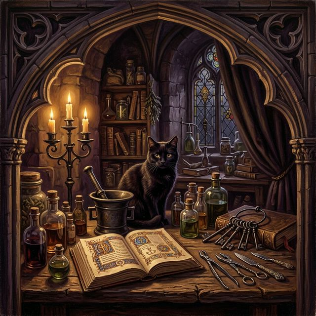

Precise interventions upon the countenance. We sculpt with surgical steel and unwavering intent — from the defiant arch of the eyebrow to asymmetrical lip modifications that speak without words. Heavy septum hardware forged for those who wear their armor on their face.
Intricate constellations mapped across the cartilage. Chainmail drapes cascading from industrial scaffolding, orbital routes charted through helix and conch. Each project is an architectural endeavor — a cathedral built upon the auricle.
Surface anchors embedded like relics beneath the skin. Dermal implants that catch the light like embedded gemstones. The art of antigravity modifications — jewelry that defies the pull of the mundane, suspended in flesh as if by sorcery.

This is not a clinic. There are no fluorescent lights, no sterile waiting rooms with year-old magazines. This is a solitary practice — one practitioner, one craft, refined through years of anatomical devotion and alchemical intuition.
Every piercing is a negotiation between steel and flesh, between intention and anatomy. I do not perform procedures; I conduct rituals. Each modification is approached with the reverence of a medieval artisan — measured, deliberate, and permanent.
The body is both canvas and cathedral. I am merely the architect who places the keystones.
— The HarlotThe Sacred Ordinances of Healing